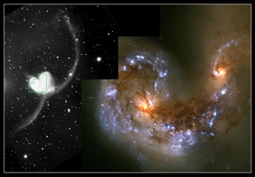
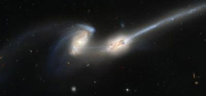
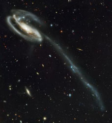

Tidal tails are the result of gravitational interactions between galaxies. During the interaction, gas and stars are often stripped from the outer regions of the galaxies to form two tidal tails: one trailing and one preceeding each galaxy. These tails can persist long after the galaxies have finally merged and are therefore considered a signature of recent merger activity.
|

The Antennae (NGC4038/39).
Credit: Brad Whitmore (STScI) and NASA] |
The Antennae (NGC4038/4039) display huge tidal tails thrown out during the merger process. In the broader view (left), the 350,000 light year long tails give the galaxies the appearance of the head of some enormous insect – hence the name for this system. A closer inspection using the Hubble Space Telescope (right), reveals that the central regions of the merging galaxies contain hundreds of star forming knots. Most of these knots are similar in size to globular clusters, however some are as large as dwarf galaxies. Although the two galaxies that make up the Antennae are well along in the process of merging to form a single elliptical galaxy, the tidal tails are expected to remain as a sign of the violent origin of the galaxy for several billion years. |
| Two galaxies caught at an even earlier stage of the merger process (they made their closest approach only 160 million years ago), make up the bodies of the ‘mice’ in this image. The two long tidal tails contain hundreds of regions of star formation, some the size of dwarf galaxies. The Mice (NGC4676) are located 300 million light years away in the constellation of Coma Berenices. |

The Mice (NGC4676).
Credit: NASA, H. Ford (JHU), G. Illingworth (UCSC/LO), M.Clampin (STScI), G. Hartig (STScI), the ACS Science Team, and ESA |
|

The Tadpole (UGC 10214).
Credit: NASA, H. Ford (JHU), G. Illingworth (UCSC/LO), M.Clampin (STScI), G. Hartig (STScI), the ACS Science Team, and ESA |
‘The Tadpole’, located 420 million light years away in the of constellation Draco, contains a large galaxy (UGC 10214) in the process of shredding a smaller dwarf galaxy (one of the two in the upper left corner of the larger galaxy). In this case, the smaller galaxy has insufficient mass to pull a significant tidal tail from UGC 10214 (the 280,000 light year long tidal tail has been stripped from the interacting dwarf galaxy), but it does have sufficient mass to seriously disturb the larger galaxy. Bright blue knots of new star formation, with sizes ranging up to those of globular clusters, have been induced in both the spiral arms of UGC 10214 and the tidal tail. |
As well as informing us about the nature of interactions between galaxies, the motions of tidal tails can be used as powerful probes of the shape of dark matter halos within galaxies. For example, the tidal stream from the Sagittarius Dwarf Galaxy has been used to show that the dark halo of the Milky Way is close to spherical. Tidal tails are therefore useful tools in the study of galaxy structure, formation and evolution.